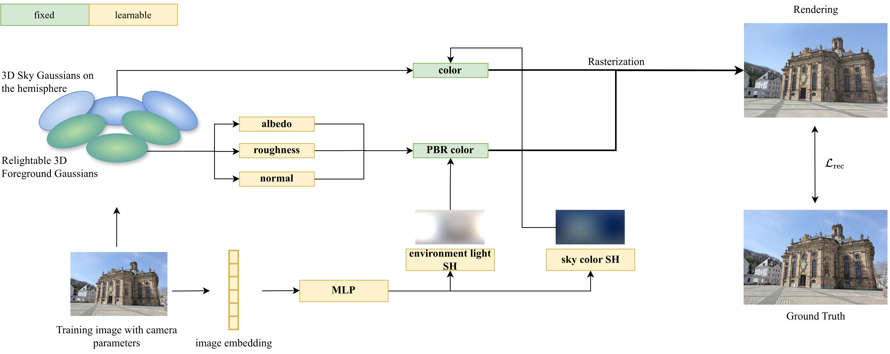

R3GW learns a relightable 3D Gaussian Splatting representation of an outdoor scene captured in the wild. Our method factorizes the scene’s foreground into geometry, material, and illumination, with the lighting represented as an environment map. This enables illumination editing along with novel view synthesis. The sky, as a non-reflective surface, is modeled with a dedicated set of Gaussians that remain independent of scene lighting and material. R3GW achieves state-of-the-art performance incorporating view-dependent effects in the foreground reflectance modeling and enhancing scene depth estimation thanks to the introduced sky model.
R3GW reconstructs an in-the-wild outdoor scene using two distinct sets of 3D Gaussians: one representing the relightable foreground with view-dependent reflectance and one representing the non‑reflective sky, whose appearance is independent of material and illumination. This decoupling stabilizes lighting estimation and improves geometry reconstruction, while enabling photorealistic relighting under arbitrary environment maps. In addition, our controllable sky model enables photorealistic sky synthesis using the learned sky colors.
3D Gaussian Splatting (3DGS) has established itself as a leading technique for 3D reconstruction and novel view synthesis of static scenes, achieving outstanding rendering quality and fast training. However, the method does not explicitly model the scene illumination, making it unsuitable for relighting tasks. Furthermore, 3DGS struggles to reconstruct scenes captured in the wild by unconstrained photo collections featuring changing lighting conditions. In this paper, we present R3GW, a novel method that learns a relightable 3DGS representation of an outdoor scene captured in the wild. Our approach separates the scene into a relightable foreground and a non-reflective background (the sky), using two distinct sets of Gaussians. R3GW models view-dependent lighting effects in the foreground reflections by combining Physically Based Rendering with the 3DGS scene representation in a varying illumination setting. We evaluate our method quantitatively and qualitatively on the NeRF-OSR dataset, offering state-of-the-art performance and enhanced support for physically-based relighting of unconstrained scenes. Our method synthesizes photorealistic novel views under arbitrary illumination conditions. Additionally, our representation of the sky mitigates depth reconstruction artifacts, improving rendering quality at the sky-foreground boundary.
An overview of the training pipeline of our method. R3GW learns a relightable 3DGS representation of an outdoor scene captured in the wild. The PBR color of the foreground Gaussians, depending on the surface normals and material properties at their positions, as well as on the environment light, enables relighting of the scene’s foreground. In contrast, the color of the sky Gaussians is independent of the scene illumination. The rendered image is formed by rasterizing the sky and the foreground Gaussians in a single pass. The Gaussians are regularized so that the sky Gaussians are responsible for the rendering of the sky pixels, while the foreground Gaussians contribute only to the foreground region. After training, the foreground Gaussians can be rendered under novel lighting conditions by supplying the corresponding environment map as input.

If you use our method in your research, please cite our paper. The paper was presented at VISAPP 2026. You can use the following BibTeX entry:
@InProceedings{corona2026r3gw,
author = {Margherita Lea Corona and Wieland Morgenstern and Peter Eisert and Anna Hilsmann},
title = {R3GW: Relightable 3D Gaussians for Outdoor Scenes in the Wild},
booktitle = {Proceedings of the 21st International Joint Conference on Computer Vision, Imaging and Computer Graphics Theory and Applications (VISAPP 2026)},
year = {2026},
pages = {432-443},
publisher = {SCITEPRESS - Science and Technology Publications},
doi = {https://doi.org/10.5220/0014332200004084}
}